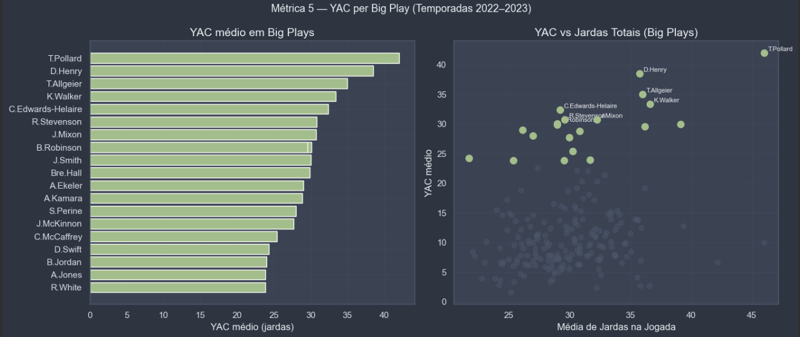
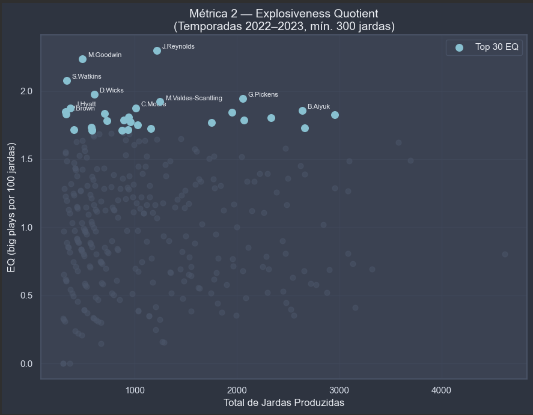

NFL Big Play Metrics
Neste projeto eu estudei apenas as big plays da NFL, as jogadas com mais de 20 jardas

Neste projeto eu desenvolvi métricas para análise de big plays na National Football League (NFL) primeiramente nas temporadas de 2022 e 2023. A big play é definida aqui como todas as jogadas acima de 20 jardas. Este é um evento relativamente raro em um jogo da NFL (~6% das jogadas), o que as tornam, muitas vezes, objeto de fascinação.
Criei oito métricas novas relacionadas principalmente aos jogadores que produziram big plays, entre elas frequência bruta de big plays por toque na bola, proporção do EPA total do jogador que vem exclusivamente de big plays e proporção de jogos em que o atleta produziu ao menos uma big play (para medir a sua constância).

Uma conclusão que podemos chegar é que explosividade e consistência raramente caminham juntas. As métricas permitem observar o impacto explosivo de uma forma melhor do que as estatísticas brutas tradicionais, abrindo caminho para uma melhores construções de elencos.